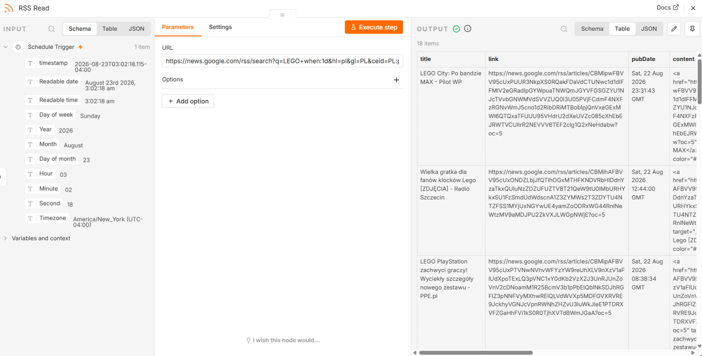
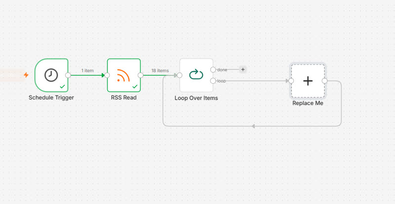
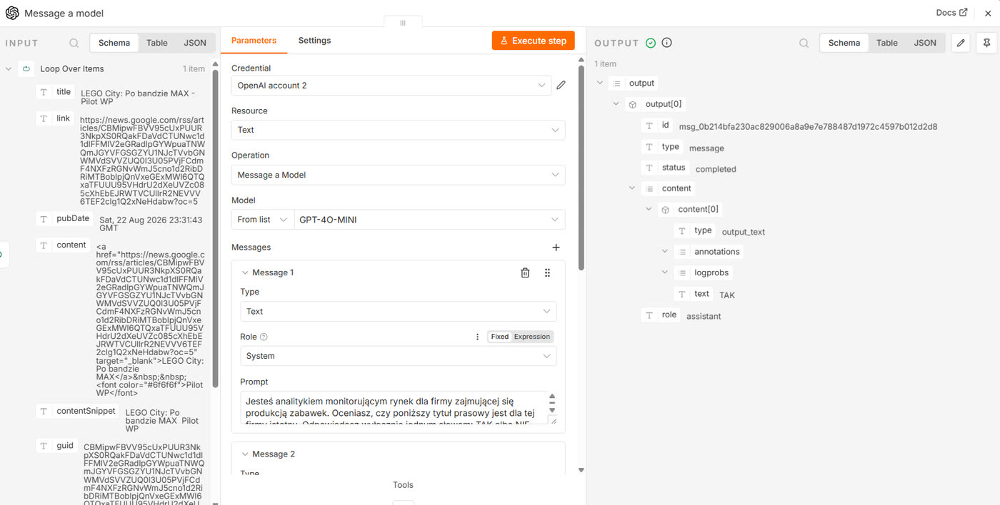
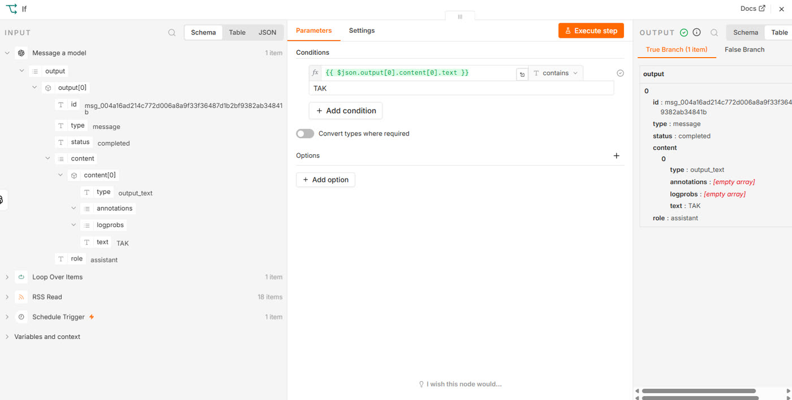
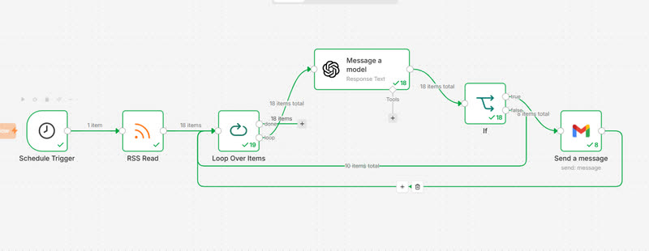
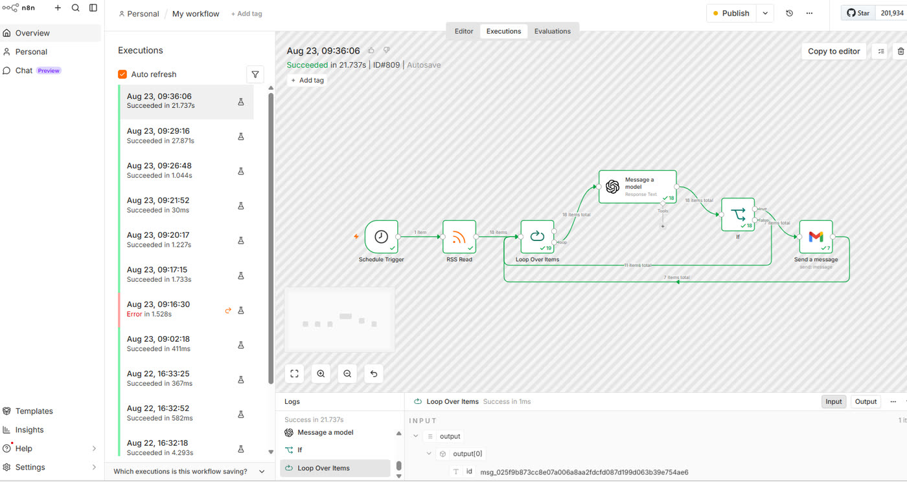

Rozdział 5
Rozdział 5. Monitor konkurencji
Monitoring konkurencji to jedna z tych czynności, które każdy strateg deklaruje, a mało kto naprawdę wykonuje. Nie z lenistwa. Po prostu czytanie dwudziestu newsletterów i sprawdzanie ośmiu stron codziennie przegrywa z każdym pilniejszym zadaniem, a pilniejsze zadanie jest zawsze. Automatyzacja nie rozwiązuje tu problemu braku czasu, tylko problem braku rytmu. Maszyna sprawdza codziennie, bo nie ma nic pilniejszego do zrobienia.
Zbudujesz teraz pierwszy z trzech systemów tego poradnika. Wszystkie węzły, które go tworzą, znasz już z rozdziałów 3 i 4 - poza dwoma, i to właśnie one zamieniają listę artykułów w coś, co samo decyduje, co jest warte twojej uwagi.
Co zbudujemy
System, który każdego ranka sam przeszuka doniesienia prasowe o wybranej marce, dla każdego z nich zapyta model, czy jest istotne, i przyśle ci mailem tylko te, które przeszły przez to sito.
Czas i koszt
Budowa zajmie około dwudziestu minut. Dwa nowe węzły wymagają więcej klikania niż wszystko, co robiłeś do tej pory, a jeden z nich trzeba połączyć w sposób, który na pierwszy rzut oka wygląda dziwnie.
Koszt jednego uruchomienia to koszt pojedynczego zapytania z rozdziału 4, pomnożony przez liczbę wiadomości z danego dnia. Przy kilkunastu wiadomościach mówimy o ułamku grosza. Warto jednak zapamiętać sam mechanizm mnożenia, bo to on decyduje o rachunku w każdym większym systemie, który kiedykolwiek zbudujesz.
Czego się nauczysz
- Jak zamienić dowolne zapytanie prasowe w kanał danych, którego nie trzeba nigdzie zakładać.
- Jak rozdzielić przepływ na dwie ścieżki w zależności od warunku, węzłem „IF".
- Jak przetwarzać elementy jeden po drugim, w kontrolowanym tempie, węzłem „Loop Over Items".
- Jak oprzeć decyzję przepływu na ocenie modelu, a nie na dopasowaniu słowa.
Zanim otworzysz n8n, przygotuj to, z czego przepływ będzie czerpał. Wklej do przeglądarki ten adres:
https://news.google.com/rss/search?q=LEGO+when:1d&hl=pl&gl=PL&ceid=PL:pl
Zobaczysz surowy plik pełen znaczników w ostrych nawiasach. Nie przejmuj się, jeśli nic z tego nie rozumiesz. Sprawdź na razie tylko jedną rzecz: czy między znacznikami widać polskie tytuły artykułów. Jeśli tak, to znaczy, że źródło działa.
Ten adres to zwykłe wyszukiwanie w Google News, tyle że w formie, którą potrafi wczytać maszyna. Fragment po q= to twoje zapytanie, when:1d zawęża wyniki do ostatniej doby, a trzy końcowe parametry ustawiają język i kraj na polski.
Utwórz nowy, pusty przepływ. Dodaj węzeł „Schedule Trigger", ustaw „Trigger Interval" na „Days", godzinę na 7am i minutę na 0. To ten sam węzeł, który poznałeś w rozdziale 3.
Dodaj węzeł „RSS Read" i połącz go z wyzwalaczem. W polu „URL" wklej adres przygotowany w kroku 1. Kliknij „Execute step".
Na ekranie zobaczyszw panelu OUTPUT listę wiadomości, a nad nią liczbę znalezionych elementów. Przy popularnej marce i oknie jednodniowym może to być kilkanaście pozycji.

Przyjrzyj się teraz kolumnie title. Każdy tytuł kończy się myślnikiem i nazwą źródła - redakcji, na zasadzie: „Wielka gratka dla fanów klocków Lego - Radio Szczecin". To wygodne, bo w jednym polu masz i temat, i źródło, a przy ocenie istotności źródło bywa ważniejsze od nagłówka.
Zajrzyj też do kolumny content. Zamiast treści artykułu znajdziesz w niej znaczniki HTML z linkiem. Tak wygląda ten kanał i nic z tym nie zrobimy. Pracujemy więc na samym tytule.
Dodaj pętlę
Kliknij znak plus przy prawej krawędzi węzła „RSS Read". Wpisz „Loop" i wybierz węzeł „Loop Over Items" (pętla po elementach). Na ekranie zobaczysz: nie jeden węzeł, ale dwa. Obok pętli n8n dołożył sam z siebie węzeł z napisem „Replace Me" (zastąp mnie). To nie jest błąd i nie jest to część twojego przepływu. To podpowiedź. n8n pokazuje ci gotowy kształt pętli i mówi wprost: tutaj wstaw pracę, którą chcesz powtarzać dla każdego elementu, a potem zawróć. Popatrz na sam węzeł pętli. Ma on dwa wyjścia po prawej stronie, jedno pod drugim, podpisane „done" (gotowe) i „loop" (pętla). To pierwszy węzeł, który ma dwa wyjścia, i pierwszy, który sam z siebie nie robi nic użytecznego. Cała jego wartość bierze się z tego, jak go połączysz.
Kliknij zatem węzeł „Replace Me" i usuń go klawiszem Delete. Zbudujesz tę część sam, żeby zobaczyć, z czego się składa.

Otwórz węzeł i sprawdź pole „Batch Size" (rozmiar paczki). Zostaw wartość 1 i zamknij panel.
Wstaw ocenę modelu
Z wyjścia „loop" dodaj węzeł „OpenAI" i wybierz akcję „Message a model", tak jak w rozdziale 4. Wskaż dane dostępowe, które zapisałeś wtedy: pojawią się na liście gotowe, bez ponownego wklejania klucza.
Dodaj wiadomość z rolą „System" i wpisz w niej:
„Jesteś analitykiem monitorującym rynek dla firmy zajmującej się [twoja branża]. Oceniasz, czy poniższy tytuł prasowy jest dla tej firmy istotny. Odpowiadasz wyłącznie jednym słowem: TAK albo NIE. Bez wyjaśnień, bez kropki, bez żadnego dodatkowego tekstu."
Dodaj drugą wiadomość, z rolą „User", i przeciągnij do niej pole title z panelu danych wejściowych po lewej stronie.
Na ekranie zobaczyszpod polem podgląd z prawdziwym tytułem pierwszej wiadomości.
Kliknij „Execute step" i sprawdź, co model odpowiedział. Rozwiń w panelu OUTPUT gałąź content, a pod nią 0, i znajdź pole text. Powinno zawierać jedno słowo.

Rozdziel ścieżki
Z wyjścia węzła OpenAI dodaj węzeł „IF". Kliknij „Add condition" (dodaj warunek).
Do górnego pola warunku przeciągnij text z panelu danych wejściowych, czyli odpowiedź modelu. Typ porównania ustaw na „String", operator na „contains" (zawiera), a w dolnym polu wpisz TAK.

Zamknij panel. Węzeł IF ma teraz dwa wyjścia: „true" (prawda) u góry i „false" (fałsz) u dołu.
Z wyjścia „true" dodaj węzeł „Gmail" - „Send a message". Ustaw „Resource" na „Message" i „Operation" na „Send", tak jak w rozdziale 3. W polu „To" wpisz swój adres, w „Subject" na przykład „Monitoring: nowa wiadomość", a do treści przeciągnij title i link, pamiętając o wciśnięciu Entera między jednym a drugim.
Zamknij pętlę
To najważniejszy krok w tym rozdziale i jedyny, który wygląda nienaturalnie.
Przeciągnij połączenie od wyjścia węzła „Gmail" z powrotem do wejścia węzła „Loop Over Items". Potem zrób to samo z wyjściem „false" węzła IF.

Powód jest prosty, choć nieoczywisty. Węzeł „Loop Over Items" nie wypuści następnego elementu, dopóki nie dostanie sygnału, że poprzedni został obsłużony. Sygnałem jest właśnie ta linia zwrotna. Obie ścieżki muszą wracać, także ta, na której nic się nie stało. Wiadomość odrzucona przez filtr również wymaga zamknięcia sprawy, bo pętla nie rozróżnia sukcesu od pominięcia, tylko obsłużone od nieobsłużonych.
Wyjście „done", jak widzisz, w tym przypadku wisi puste. Ale tak ma być, więc zostawiamy to w ten sposób.
Uruchom
Kliknij „Execute workflow".
Na ekranie zobaczyszwęzły zapalające się po kolei, a potem cykl powtarzający się w kółko: OpenAI, IF, czasem Gmail, powrót. Licznik pod węzłem OpenAI rośnie z każdym okrążeniem. Na końcu zapali się wyjście „done".
Sprawdź, czy działa
Otwórz skrzynkę pocztową. Powinno w niej być tyle wiadomości, ile tytułów model uznał za istotne.
Może być ich zero i to również jest poprawny wynik, nie awaria. Znaczy tyle, że dziś nie napisano nic, co dotyczyłoby wybranej marki. Żeby się upewnić, że przepływ naprawdę zadziałał, zajrzyj do węzła IF i sprawdź, ile elementów poszło każdą ze ścieżek. Suma powinna zgadzać się z liczbą wiadomości z węzła RSS Read.
Zajrzyj też do zakładki „Executions". Uruchomienie powinno być zielone, a przy węźle OpenAI powinna stać liczba wykonań równa liczbie wiadomości.

Co może pójść nie tak
- Przepływ nie kończy się i kręci w nieskończoność, albo przetwarza tylko pierwszą wiadomość i staje. To ten sam błąd widziany z dwóch stron: brakuje linii zwrotnej. Sprawdź, czy zarówno wyjście węzła Gmail, jak i wyjście „false" węzła IF wracają do wejścia węzła „Loop Over Items". Obie, nie jedna.
- Dostałeś kilka maili o tej samej sprawie. Ten sam temat opisało kilka redakcji, a dla przepływu to kilka osobnych wiadomości. To nie usterka, tylko to, jak wygląda surowy monitoring prasowy.
- Wszystko przechodzi przez filtr, także rzeczy oczywiście nieistotne. Sprawdź w panelu OUTPUT węzła OpenAI, co model faktycznie napisał. Jeśli odpowiada zdaniem zamiast jednym słowem, słowo TAK pojawi się w nim niemal zawsze i warunek przepuści wszystko. Zaostrz polecenie systemowe.
- Nic nie przechodzi, choć model odpowiada TAK. Warunek w węźle IF wskazuje na złe pole. Sprawdź, czy po lewej stronie warunku jest na pewno text z odpowiedzi modelu, a nie tytuł artykułu.
Wariacje na temat
Obserwuj dwie marki naraz. Nie potrzebujesz do tego drugiego węzła. Wystarczy zmienić zapytanie w adresie, wpisując q=LEGO+OR+Playmobil+when:1d. Reszta przepływu obsłuży to bez żadnej zmiany.
Zamiast maila poproś model o jedno zdanie streszczenia. Zmień polecenie tak, żeby zwracało ocenę i krótkie uzasadnienie, i wstaw to uzasadnienie do treści wiadomości. Kosztuje odrobinę więcej, bo model pisze więcej, ale poranny przegląd czyta się wtedy znacznie szybciej.
Przepływ w repozytorium
Pobierz plik 05-monitor-konkurencji.json ze strony heuristica.pl/automatyzacje-n8n i zaimportuj go tak samo jak w rozdziale 1. Po imporcie wskaż własne dane dostępowe do OpenAI i Gmaila oraz podmień markę w adresie kanału.
Rozgałęzienie odpowiada na pytanie, co zrobić z tym elementem. Pętla odpowiada na pytanie, co z następnym. Wszystko, co zbudujesz dalej, będzie kombinacją odpowiedzi na te dwa pytania, w coraz bardziej rozbudowanych wariantach.